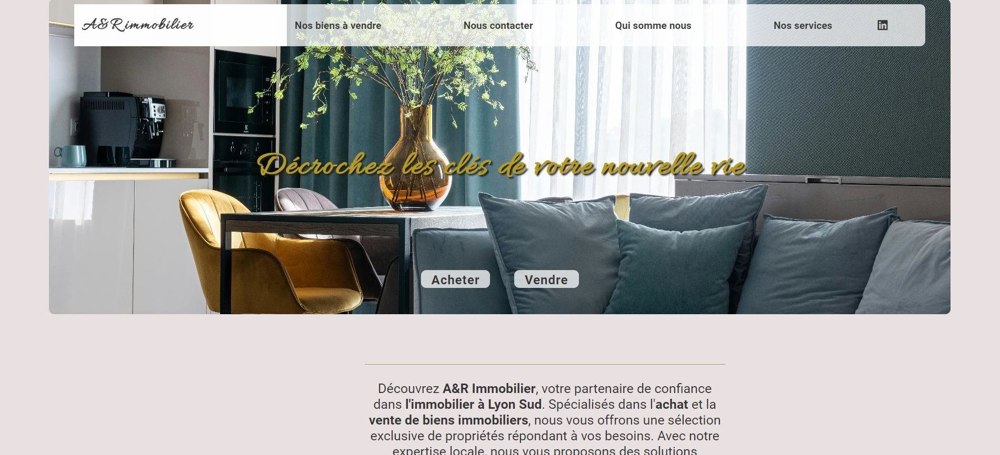

Sur cette vue, vous pouvez voir les informations du bien qui s'affichent uniquement si elles concernent le bien présenté. On peut aussi voir le DPE, qui est dynamique et entièrement créé en code.
Ce projet est en cours de développement, il concerne un site pour une société de rachat et de ventes immobilières. La sortie du site Web est prévue pour Juillet

Sur cette vue, vous pouvez voir les informations du bien qui s'affichent uniquement si elles concernent le bien présenté. On peut aussi voir le DPE, qui est dynamique et entièrement créé en code.
Le lien Géorisque ne vous emmène pas seulement sur le site du portail Géorisque, mais de manière dynamique, il vous dirige vers la page du bien présenté.

Pour la partie technique, tout ce projet est développé avec le framework Symfony (PHP) ainsi qu'en JavaScript, HTML, et CSS. Le morceau de code concerne le lien Géorisque qui transmet de manière dynamique toutes les informations du bien, y compris son adresse et sa géolocalisation.
Ce site sera prêt pour le mois d'août 2024. Il concerne un plombier spécialisé dans la plomberie industrielle.
Le troisieme site sera pour un sculpteur sur bois.